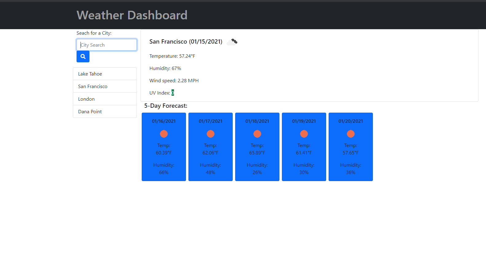
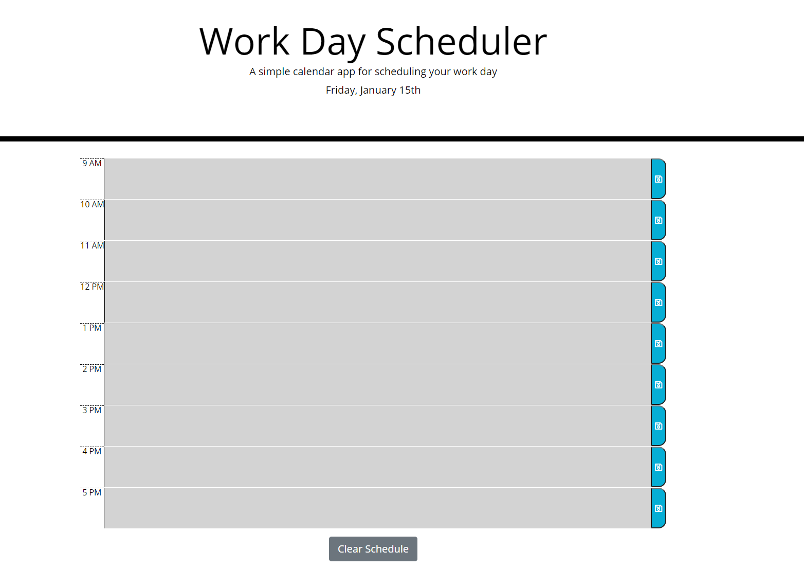
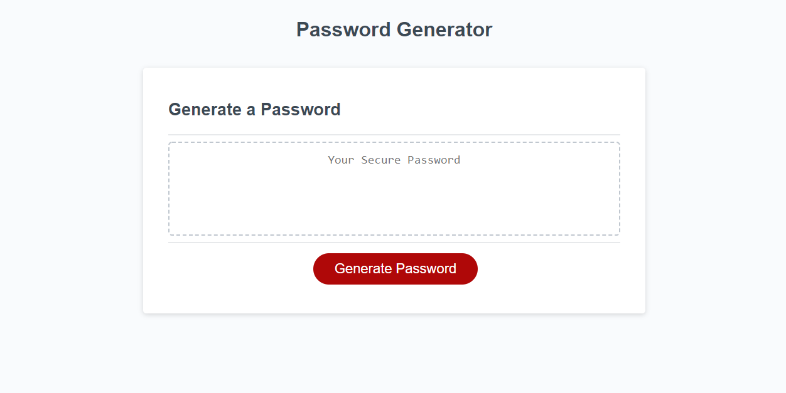

Unwind Teamwork + Foundation CSS

Unwind marks the milestone of putting everything together and building an application with a small team. Communication, planning, and work delegation were necessary to complete the build. The goal of the build was to stitch together multiple third party APIs, become familiar with Zurb's Foundation, and get hands on experience building an application in a team team setting. The team consisted of three junior developers working over four days.
Weather Dashboard AJAX + API + Bootstrap CSS
This project represented an opportunity to hone my JQuery skills and learn to use AJAX to get data from a third party API. The goal was to be able to generate content on the page dynamically and populate it with data retrieved from an API. A practical application of these two learning objectives is a weather dashboard that will allow the user to find weather information in a city of interest. As a bonus objective previously searched cities are saved in local storage which allows user data persistence between sessions.
Daily Planner JQuery + Local Storage
This daily planner project was an exercise in using JQuery, local storage, and using a javascript library. The planner displays the current date and a list of time blocks that can have text assigned to them. Each time block is color-coded to indicate whether it is in the past, present, or future. By clicking on a time block the user can type in text which is then saved to local storage using the save button located on the right hand side of each time block. This allows the contents of each text box to be saved in the event the page is refreshed or the browser is closed. Finally a button located at the bottom of the screen allows the user to clear the contents of all the text boxes and reset local storage.
Password Generator Javascript + Pseudocoding
The Password Generator exemplifies work from early in my learning process. Javascript was new to me when I built this, but spending ample time pseudocoding this project proved an invaluable lesson. The password generator will ask a series of questions so that it can produce a customized password. It is possible to toggle the inclusion of uppercase characters, lowercase characters, numbers, and special characters. The user can also specify that the password be 8-128 characters long.
Biography
Coleman is a professional complex problem solver with extensive experience helping teams and clients achieve their goals. He started using computers after building his first in fifth grade, and is a consumer parts enthusiast. He is also a skilled woodworker and luthier, and brings the craftsmanship values of quality and efficiency to all aspects of life.